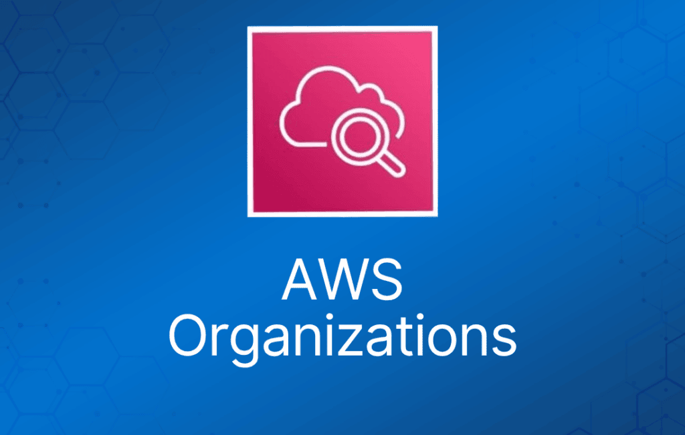

随着你的 AWS 资源不断增长和扩展，AWS Organizations 可以帮助你集中管理和治理整个环境。
AWS 账户天然就是权限、安全、成本和工作负载的边界。
在扩展云环境时，使用多账户架构是推荐的最佳实践。
AWS Organizations 为管理多账户环境提供了许多功能，包括：
- 通过 AWS Command Line Interface (CLI)、SDK 或 API 以编程方式创建新账户，简化账户创建流程。
- 将账户分组到 organizational unit (OU) 中，即服务于单个应用或服务的账户分组。
- 应用 tag policy 对组织中的资源进行分类或跟踪，并为用户或应用提供基于属性的访问控制（attribute-based access control）。
- 将支持的 AWS 服务的管理职责委派给各账户，让用户可以代表组织管理这些服务。
- 集中为你的安全团队提供工具和访问权限，代表组织管理安全需求。
- 设置 Amazon Single Sign-On (SSO)，使用你的 Active Directory 提供对 AWS 账户和资源的访问，并根据不同的工作职责自定义权限。
- 对用户、账户或 OU 应用 service control policy (SCP)，控制组织内对 AWS 资源、服务和区域的访问。
- 使用 AWS Resource Access Manager (RAM) 在组织内共享 AWS 资源。
- 跨账户启用 AWS CloudTrail，生成云环境中所有活动的日志，成员账户无法关闭或修改该日志。
- Organizations 为你提供单一的合并账单。
- 此外，你还可以查看跨账户的资源使用情况，使用 AWS Cost Explorer 跟踪成本，并使用 AWS Compute Optimizer 优化计算资源的使用。
AWS Organizations 对所有 AWS 客户免费开放，不收取额外费用。
AWS Organizations API 支持账户创建和管理的自动化。
AWS Organizations 提供两种功能集：
- 合并账单（Consolidated billing）。
- 全部功能（All features）。
默认情况下，组织支持合并账单功能。
合并账单将付费账户（paying account）和关联账户（linked account）分开。
你可以通过合并账单，使用 AWS Organizations 为组织中的所有 AWS 账户设置单一的支付方式。
通过合并账单，你可以看到所有账户产生费用的合并视图。
还可以利用聚合用量带来的定价优惠，例如 Amazon EC2 和 Amazon S3 的阶梯折扣。
合并账单的关联账户上限为 20 个（默认）。
策略可以在层级结构的不同层级上分配。
可以通过阶梯折扣帮助控制成本。
未使用的 Reserved EC2 实例会在整个组内共享抵扣。
付费账户应仅用于账单管理用途。
可以在付费账户上设置账单告警，展示所有关联账户的账单情况。
关键概念
你需要理解的一些关键概念如下：
AWS Organization – 组织是一组 AWS 账户的集合，你可以将它们组织成层级结构并集中管理。
AWS Account – AWS 账户是你的 AWS 资源的容器。
Management Account（管理账户）– 管理账户是你用来创建组织的 AWS 账户。
Member Account（成员账户）– 成员账户是组织中除管理账户之外的 AWS 账户。
Administrative Root（管理根）– 管理根是组织 AWS 账户的起点，是组织层级结构中最顶层的容器。
Organizational Unit (OU) – OU 是组织内一组 AWS 账户的分组。OU 还可以包含其他 OU，从而构建层级结构。
Policy（策略）– 策略是包含一条或多条语句的"文档"，用于定义你想要应用到一组 AWS 账户的控制规则。AWS Organizations 支持一种特定的策略类型，称为 Service Control Policy (SCP)。SCP 定义了组织内不同账户可用的 AWS 服务操作，例如 Amazon EC2 的 RunInstances。
管理账户的最佳实践：
- 仅在必须使用管理账户的任务中使用管理账户。
- 为管理账户的 root 用户使用群组邮箱地址。
- 为管理账户的 root 用户使用复杂密码。
- 为 root 用户凭证启用 MFA。
- 在账户联系信息中添加电话号码。
- 定期检查并记录谁拥有访问权限。
- 将 root 用户凭证的使用流程形成文档。
- 实施控制措施以监控对 root 用户凭证的访问。
在组织之间迁移账户
账户可以在组织之间迁移。
你必须同时拥有成员账户和管理账户的 root 或 IAM 访问权限。
账户数量较少时，可以使用 AWS Organizations 控制台。
如果需要迁移的账户很多，使用 AWS Organizations API 或 AWS Command Line Interface (AWS CLI)。
所有账户的账单历史和账单报告都保留在组织的管理账户中。
迁移之前，请先下载你想保留的成员账户的账单或报告历史。
当成员账户离开组织后，该账户产生的所有费用将直接向这个独立账户收取。
即使账户迁移只需要一分钟就能完成，成员账户也很可能会产生一些费用。
Service Control Policy (SCP)
Service control policy (SCP) 是一种组织策略，可用于管理组织中的权限。
SCP 提供了对组织中所有账户的最大可用权限的集中控制。SCP 帮助你确保账户不超出组织的访问控制准则。
SCP 仅在启用了全部功能的组织中可用。
如果组织只启用了合并账单功能，则 SCP 不可用。
仅靠 SCP 不足以为组织中的账户授予权限。
SCP 本身不授予任何权限。SCP 定义的是护栏（guardrail），即对账户管理员可以委派给受影响账户中 IAM 用户和角色的操作设置上限。
管理员仍需向 IAM 用户或角色、或账户中的资源附加 identity-based policy 或 resource-based policy 来授予权限。
有效权限是 SCP 允许的权限与 IAM 及 resource-based policy 允许的权限之间的逻辑交集。
SCP 继承规则：
- SCP 仅影响 IAM 用户和角色，即由组织内账户管理的用户和角色。SCP 不直接影响 resource-based policy，也不影响组织外部账户的用户或角色。
- SCP 限制成员账户中 IAM 用户和角色的权限，包括成员账户的 root 用户。
- 任何账户只拥有其所有上级层级都允许的权限。
- 如果某项权限在账户上方的任何层级被阻止——无论是隐式阻止（未包含在 Allow 策略语句中）还是显式阻止（包含在 Deny 策略语句中）——受影响账户中的用户或角色都无法使用该权限，即使账户管理员为该用户附加了具有 */* 权限的 AdministratorAccess IAM 策略。
- SCP 仅影响组织中的成员账户，对管理账户中的用户或角色没有任何影响。
- 用户和角色仍必须通过适当的 IAM 权限策略被授予权限。没有附加任何 IAM 权限策略的用户没有任何访问权限，即使适用的 SCP 允许所有服务和所有操作。
- 如果用户或角色的 IAM 权限策略授予了某个操作的访问权限，且该操作也被适用的 SCP 允许，则该用户或角色可以执行该操作。
- 如果用户或角色的 IAM 权限策略授予了某个操作的访问权限，但该操作未被适用的 SCP 允许或被其显式拒绝，则该用户或角色无法执行该操作。
- SCP 影响所附加账户中的所有用户和角色，包括 root 用户。唯一的例外见 不受 SCP 限制的任务和实体。
- SCP 不影响任何 service-linked role。service-linked role 使其他 AWS 服务能够与 AWS Organizations 集成，无法被 SCP 限制。
- 当你在根（root）中禁用 SCP 策略类型时，所有 SCP 会自动从该根下的所有 AWS Organizations 实体上分离。AWS Organizations 实体包括 OU、组织和账户。
- 如果你在根中重新启用 SCP，该根会自动恢复为仅向根下所有实体附加默认的 FullAWSAccess 策略。
- 禁用 SCP 之前对 AWS Organizations 实体所做的 SCP 附加关系会丢失，且不会自动恢复，不过你可以手动重新附加。
- 如果同时存在 permissions boundary（IAM 的高级功能）和 SCP，则 boundary、SCP 和 identity-based policy 三者都必须允许该操作。
你不能使用 SCP 限制以下任务：
- 管理账户执行的任何操作。
- 使用附加到 service-linked role 的权限执行的任何操作。
- 以 root 用户身份注册 Enterprise 支持计划。
- 以 root 用户身份更改 AWS 支持级别。
- 为 CloudFront 私有内容提供 trusted signer 功能。
- 以 root 用户身份为 Amazon Lightsail 邮件服务器配置反向 DNS。
- 某些 AWS 相关服务上的任务：
- Alexa Top Sites。
- Alexa Web Information Service。
- Amazon Mechanical Turk。
- Amazon Product Marketing API。
Resource Groups
你可以使用 resource group 来组织你的 AWS 资源。
在 AWS 中，resource（资源）是你可以操作的实体。
Resource group 让你可以一次性对大量资源执行管理和自动化任务，更加轻松。
Resource group 允许你将资源分组，然后为它们打标签。
Tag Editor 可以辅助查找资源并添加标签。
你可以通过以下任一入口访问 Resource Groups：
- AWS Management Console 的导航栏。
- 在 AWS Systems Manager 控制台中，通过左侧导航窗格中的 Resource Groups 入口。
- 使用 Resource Groups API，通过 AWS CLI 命令或 AWS SDK 编程语言。
Resource group 是位于同一 AWS 区域、且符合查询条件的一组 AWS 资源集合。
在 Resource Groups 中，可以基于两种查询类型来构建分组。
两种查询类型都包含以 AWS::service::resource 格式指定的资源。
- 基于标签（Tag-based）– 基于标签的查询包含资源列表和标签。标签是帮助你在组织内识别和分类资源的键。标签可以选择性地为键设置值。
- 基于 AWS CloudFormation 堆栈（Stack-based）– 在基于 AWS CloudFormation 堆栈的查询中，你选择当前区域中账户里的一个 AWS CloudFormation 堆栈，然后选择堆栈中希望加入分组的资源类型。查询只能基于一个 AWS CloudFormation 堆栈。
Resource group 可以嵌套；一个 resource group 可以包含同一区域中已有的 resource group。